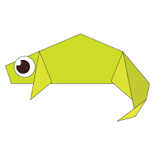

Origami Designs
About us
Follow us

Facts about peacock
- Only Males Have Those Long, Beautiful Feathers
- Peacocks Take Three Years to Grow Their Tail Feathers
- The Indian Peacock Is the Country's National Bird.

Facts about boats
- Large watercraft are generally called ships
- Smaller watercraft are generally called boats
- They are designed to float on water, whether it be in lakes, rivers or seas
#

Step by Step diagrams
Step by Step diagrams are probably the most popular and easiest to follow way to show how to fold things out of paper.
Trying to find good origami instructions on the internet can be a lot of work though. To help your search we've put
together the largest database of free origami diagrams anywhere on the internet.

Camel
- camel's ears are furry
- camels can move easily across the sand because its specially designed
- when they find water, they will drink as much as possible

Chameleon
- Chameleons are reptiles that are part of the iguana suborder
- Changing skin colour is an important part of communication among hameleons
- Most chameleons have a prehensile tail that they use to wrap around tree branches